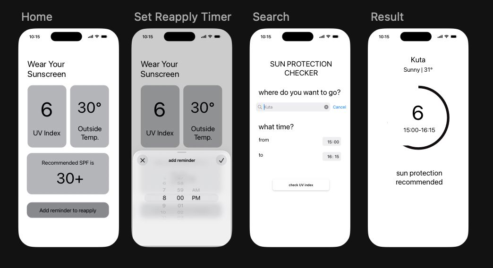

Solara

Project Overview
Solara is a UV index monitoring and sunscreen reminder application built using SwiftUI. The app helps users stay aware of daily UV exposure by providing real-time UV information, sunscreen reapply timers, and personalized activity tracking.
This project was developed as part of a remix challenge at Apple Developer Academy, where participants were challenged to redesign and reinterpret an existing Apple application experience. Solara was inspired by the visual language and interaction patterns of the Apple Weather app, but reimagined with a focused purpose around sun safety and skincare awareness.
Within a 3-week development timeline, the project progressed from ideation and UX exploration into a fully functional iOS application that could run locally on iPhone devices. The process involved product thinking, interface design, prototyping, and SwiftUI implementation.
The Problem
Lack of Awareness Around UV Exposure
Many people underestimate daily UV exposure and often forget to reapply sunscreen, increasing the risk of skin damage during outdoor activities.
Existing weather applications provide UV information as a secondary feature, making it less noticeable for users who specifically want to monitor sun exposure. The challenge was to create a focused experience that makes UV awareness feel more accessible, interactive, and actionable.
Design Process
The design process focused on adapting Apple’s Weather app interaction patterns into a more specialized experience centered around UV tracking and sunscreen management.
Ideation & Research
Explored daily skincare habits, UV exposure risks, and analyzed the interaction system of Apple Weather. The ideation phase focused on identifying how weather-based information could be transformed into a health-oriented mobile experience.
Wireframing
Created mid-fidelity wireframes to map core user flows such as checking UV levels, setting sunscreen timers, and adding daily outdoor activity lists.

UI Exploration
Designed interfaces inspired by Apple's Weather app aesthetics, including glassmorphism cards, gradient backgrounds, smooth spacing, and clean typography to maintain familiarity while introducing a unique product identity.
SwiftUI Development
Implemented the final interface and interactions using SwiftUI. The application included real-time UV displays, sunscreen reapply timers, and list management features that could run locally on iPhone devices.
Key Features
- Real-time UV index monitoring interface.
- Sunscreen reapply timer reminders.
- Activity and outdoor checklist management.
- Weather-inspired visual interface using SwiftUI.
- Responsive layout optimized for iPhone devices.
My Contributions
- Designed the overall UI/UX experience and user flow.
- Conducted ideation and product concept development.
- Created wireframes and high-fidelity interfaces in SwiftUI style.
- Developed the application using SwiftUI.
- Adapted Apple Weather interaction patterns into a focused UV utility app.